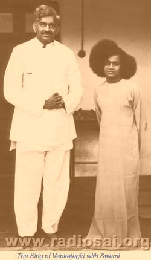

Rozmowy z synem radży Venkatagiri
Venkatagiri przez wieki była siedzibą królewskiego rodu oddanego wspieraniu, ochronie i szerzeniu dharmy. Ileż to świątyń zbudowano, odnowiono i utrzymywano dzięki jego hojności! Trudno zliczyć ilu dotąd wedyjskim panditom (uczonym w pismach) patronowała ta królewska rodzina i ile książek religijnych wydano przy jej wsparciu, by dotrzeć do mas. Zauważmy, że nawet obecnie rodzina ta żywo interesuje się dobrem świątyń i math (zakonów) mimo, że ich kraj i pozycję gruntownie zmieniły polityczne zawieruchy.
Do około pięćdziesięciu lat temu Venkatagiri było księstwem. Miejscowość o tej nazwie znajduje się około stu kilometrów na północ od Chennai (Madrasu). Po uzyskaniu przez Indie niepodległości (1947), wszystkie księstwa z kolonii brytyjskiej zostały włączone do Indii bądź Pakistanu, w zależności od położenia i składu demograficznego.
Radża (właśc. radźa czyli król lub książę) Venkatagiri był jednym z pierwszych wielbicieli Baby. Był ciekawą mieszanką człowieka Wschodu i Zachodu. Wykształcenie zdobył w Anglii, obracał się w międzynarodowych towarzystwach, polował na grubą zwierzynę i grywał w polo. Wyróżniał się osobowością, zachowywał się jak prawdziwy książę a mówił po angielsku tak jak angielski dżentelmen. Niemniej, w sprawach religii był ortodoksyjnym Hindusem. Jako człowiek głęboko religijny, żarliwie czcił Pana Ramę. Po raz pierwszy zobaczył Swamiego, gdy Bhagawan dopiero co przestał być nastolatkiem. Wystarczyło jedno spojrzenie, by radża był przekonany, że oto ponownie przyszedł jego drogi Pan Rama. Od tego dnia dla radży Rama stał się Sairamą. Swami często wyjeżdżał do Venkatagiri i pozostawał tam przez długie okresy. Tamtejsze otoczenie było sprzyjające — liczni wedyjscy uczeni i miłośnicy muzyki. Nawiasem mówiąc, sam Swami dawał prywatne koncerty! Gdy nadchodził czas na powrót Swamiego, radża zwykł kłaść się na drodze, gdzie Swami przejeżdżał w samochodzie. Drogi nie były brukowane, więc samochód wzbijał tumany kurzu. Oddany radża chciał dosłownie kąpać się w tym świętym kurzu; tak głęboko uwielbiał Babę! Aby zapewnić, że kurz pochodził wyłącznie od pojazdu Swamiego, radża zabraniał wszystkim innym pojazdom przejeżdżać tą drogą. To radża w tamtych czasach w Puttaparthi zwykle organizował obchody świąt i załatwiał wszystkie niezbędne sprawy. Swami często z nostalgią wspomina radżę opisując go jako lojalnego wielbiciela, ustępującego jedynie Hanumanowi — jest to nadzwyczajna pochwała, zważywszy że pochodzi od samego Bhagawana. Poniżej przedstawiamy wyjątki z długiej rozmowy z młodszym synem radży, VGK Rachandrą (VGK), zachowanej w archiwach Radio Sai. Rozmówcą syna radży jest Prof. G. Venkataraman (GV).
GV: Sai Ram i witaj w naszym studio. Powiedz, proszę, parę słów o swoim życiu.
VGK: Mój ojciec był ostatnim radżą w Venkatagiri. Po zniesieniu księstw nikt inny nie był koronowany, jednak mój starszy brat dalej nosi ten tytuł.
GV: Jak się nazywa twój brat?
VGK: To długie nazwisko, ale powiem wam jakie ma inicjały: VVVRK Rachandra. Rachandra to dla nas wszystkich wspólne nazwisko. Ja nazywam się VGK Rachandra — Gopala Krishna Rachandra. Mój ojciec dowiedział się o Swamim w 1948 r. Mieliśmy wtedy bardzo wielki bungalow w Bangalore na 21 akrach (ok. 8,5 ha) za pałacem maharadży Majsuru (Mysore), a Swami często mieszkał w tamtym domu.
Pierwsze spotkanie króla Venkatagiri ze Swamim
GV: Jak twój ojciec dowiedział się o Swamim w owym 1948 r.?
VGK: Jeden z krewnych powiedział mu, że wielki mahatma mieszka w Puttaparthi. W tym akurat czasie Swami przebywał w Bangalore w domu Sakammy.
Mój ojciec był wielkim bhaktą Ramy. Moja babka zmarła w 1947 r., a Swami odwiedził Venkatagiri po raz pierwszy w 1950 r. Ojciec poprosił Swamiego, aby pokazał mu moją babkę. Miała na imię Ratnamma. Swami powiedział: „Chodź, Ratnamma.” Ona wyszła ze ściany nie jak senna zjawa czy spowita mgłą, lecz z krwi i kości. Wyglądała tak jak za życia. Dotknęliśmy jej stóp. Do ojca powiedziała: „On jest Śri Ramą, którego czcisz, ale ma cechy Śri Kriszny. Będzie próbował cię zwieść, by zobaczyć czy odejdziesz z Jego owczarni. Bądź więc ostrożny; nie opuszczaj Go.” Po kilku minutach powoli wróciła tam, skąd przyszła. Działo się to w sierpniu 1950 r. podczas pierwszej wizyty Swamiego w Venkatagiri.
GV: Spotkaliście się z Nim dwa lata wcześniej w domu Sakammy. Opowiedz nam o tym spotkaniu.
VGK: Byliśmy tam wraz z 50–100 innymi ludźmi oczekującymi na zewnątrz. Ktoś wszedł do środka i powiedział, że przyjechał radża Venkatagiri. Swami odrzekł: „I co, czy on ma poroże na głowie? Niech czeka, przyjmę go później.” Nie przyjmował nas przez pięć dni, chociaż czekaliśmy od rana do wieczora. Nasze służące otrzymały audiencję przed nami! Niechybnie wszystko to było wystawianiem nas na próbę. Mój ojciec był bardzo religijny i głęboko wierzący. Czekaliśmy więc i wreszcie, piątego dnia zostaliśmy wezwani całą rodziną. Pierwszy cud, jakiego byliśmy świadkami, dotyczył mnie. Miałem egzemę z wydzieliną płynu o nieprzyjemnym zapachu. Pierwszą rzeczą, jaką Swami zrobił, było dotykanie na całej powierzchni schorzenia i zdarzył się cud nad cudami: egzemy do dziś nie ma. Zrobił to, chociaż nikt Go o nic takiego nie prosił.
W 1950 r. mój ojciec pojechał do Puttaparthi, a podczas tego wyjazdu otworzył szkołę średnią w Bukkapatnam. Był to pierwszy przypadek wizyty kogokolwiek z naszej rodziny w Puttaparthi.
GV: Jak to się stało, że twój ojciec otworzył tę szkołę w Bukkapatnam?
VGK: Swami go o to poprosił, gdy spotkaliśmy się z nim w Bangalore. W 1949 r. latem mieszkaliśmy w naszym domu w Bangalore. Graliśmy w krykieta, a ojciec był świetnym graczem w polo.
Swami i krykiet
GV: Skoro mowa o krykiecie, G.V. Subba Rao wspominał kiedyś o zdarzeniu, gdy ojciec kazał ci zajmować się Swamim. W tym czasie w Madrasie odbywał się mecz krykieta o trofeum Ranjit, a ty bardzo chciałeś wysłuchać relacji na żywo w radiu.
VGK: Nie o to trofeum, lecz był to mecz między Indiami i Indiami Zachodnimi [Antyle i Barbados na Atlantyku].
GV: Subba Rao mówił, że Swami na żywo komentował ten mecz dla ciebie.
VGK: Tak, calutki mecz, tak jakby go oglądał! Na przykład, jak Hazare czuł się, gdy zranił się w kostkę, upadając przy próbie złapania piłki.
GV: Oglądałem ten mecz — Everton Weekes wyszli na 90. Ale wróćmy do pierwszej wizyty twojego ojca w Puttaparthi.

|
Podróż Swamiego do Venkatagiri
VGK: Podczas tego pobytu ojciec zaprosił Swamiego do Venkatagiri. Swami zgodził się i dodał: „Przyślij kogoś to pojadę.” W tamtym czasie Swami nie miał samochodu. Ojciec przystał na to i uzgodniono termin na zaraz po święcie Krisznasztami [Urodziny Kriszny]. W tamtym okresie byłem ateistą.
GV: Mój Boże, mając takiego ojca?! Pozostałeś ateistą nawet po tamtym cudownym wyleczeniu?
VGK: Tak, podchodziłem do tego wszystkiego sceptycznie. Wówczas nie zrobiło to na mnie wrażenia. Ojciec powiedział: „Jedź i przywieź Swamiego.” Ja odparłem: „Ojcze, nie chcę jechać. Poślij kogoś innego.” Tak więc, poproszono o to jednego z moich krewnych, który był dyrektorem ongiś mojej szkoły w Venkatagiri. Zdecydowano, że samochód wyruszy z Venkatagiri rano o godz. 5:30. W nocy jednak we śnie ukazał mi się Swami i dał mi owoce mango. Po zjedzeniu mango strasznie zapałałem chęcią natychmiastowego wyruszenia do Puttaparthi. Poszedłem więc do ojca, zbudziłem go i powiedziałem mu, że natychmiast wyjeżdżam. Bardzo się z tego ucieszył. Ojciec poinstruował mnie, abym przy przejeżdżaniu przez ważniejsze miasta, takie jak Madanapalli czy Kadari, wysyłał telegram. Wyjaśnił: „W oparciu o twoje informacje przygotuję na czas purnakumbhę [ofiara w przystrojonym naczyniu] i słonie na przyjęcie Swamiego w procesji.” Zgodziłem się zrobić tak, jak sobie życzył.
Gdy dotarłem do Puttaparthi, celebrowano tam Krisznasztami a Swami przebywał w starym Mandirze. Tam się udałem. Nagle Swami stał się błękitny. Nie tylko w moich oczach, ale widziało to także wielu innych. Swami był błękitny i miał namam [znaki Wisznu namalowane na czole] oraz pawie pióra we włosach. Potem śpiewaliśmy bhadźany, po których poszliśmy spać.
W drogę wyruszyliśmy wcześnie rano. W każdym mieście, przez które przejeżdżaliśmy, mówiłem Swamiemu, że mam wysłać telegram. Swami odpowiadał: „Nie jest to potrzebne; czym się przejmujesz? Ja tutaj jestem.” Tak więc jechaliśmy dalej bez wysyłania telegramu. W jednym miejscu zatrzymaliśmy się na lunch. Mieliśmy ze sobą kilka pustych naczyń. Swami dotykał je, a one wypełniały się słodkościami i innymi artykułami. Najedliśmy się do syta i ruszyliśmy w dalszą podróż. Gdy dojeżdżaliśmy do Tirupathi, byłem już mocno roztrzęsiony, gdyż miały być poczynione przygotowania na uroczyste przyjęcie Swamiego. Ale gdy wjechaliśmy do Venkatagiri, okazało się, że wszystko było na swoim miejscu: purnakumbha, słonie i akcesoria wraz ze służącymi w turbanach! Swami wysiadł z samochodu i w procesji zabraliśmy go do pałacu, gdzie Swami poszedł do swojego pokoju na odpoczynek. Nikt inny do dziś nie mieszka w tym pokoju — pozostaje Swamiego. Zanim Swami zeszedł, wyznałem ojcu, że nie wysłałem żadnego telegramu. On na to: „Zgłupiałeś? Powiadasz, że nie wysłałeś, a przecież tutaj są.” I pokazał mi plik telegramów: „Przejeżdżamy przez Madanapalli,” „Mijamy Kadari” i tak dalej — telegramy ze wszystkich miast, przez które przejeżdżaliśmy! Później ojciec zaprosił naczelnika poczty i spytał, czy otrzymał jakieś telegramy. On odrzekł: „Nie, proszę pana, nie otrzymaliśmy znikąd żadnego telegramu.” „Więc czym są te telegramy?” — dopytywał się ojciec. „Proszę pana, niewątpliwie są one na urzędowych formularzach, ale nie ma na nich stempla Urzędu Pocztowego” — powiedział naczelnik. Nie było stempla, gdyż przyszły wprost od Swamiego!
Pobyt Swamiego w Venkatagiri
GV: Jak długo Swami przebywał w Venkatagiri, gdy przyjechał tam po raz pierwszy?
VGK: Piętnaście dni. Prowadziliśmy zapiski wszystkiego, co robił w formie dziennika.
GV: Co więc robił w Venkatagiri?
VGK: Niewiele było imprez publicznych. Głównie rozmawialiśmy w gronie rodzinym — raczej nie o filozofii; od czasu do czasu na temat Ramajany. Najczęściej zabawialiśmy się. Na przykład, nagle On pyta: „Jakiego koloru jest ubranie, które mam na sobie?” W tamtym okresie nosił odzienie rozmaitego koloru. „Swami, masz niebieskie ubranie.” „Dunnapota (bawół), powinieneś odwiedzić okulistę. Mówisz, że to niebieskie, gdy jest czerwone.” Przyglądam się ponownie i widzę, że jest czerwone. Często bywał wyjątkowo figlarny. „Czego chcecie?” — pytał. Dawał, cokolwiek sobie zażyczyliśmy. Pewnego dnia siedzieliśmy wszyscy razem — kuzyn, brat itd. — a On pyta: „Czego chcecie?” Ja mówię: „Chcę mango” (a był to grudzień, nie pora na mango). Ktoś chciał 'gruszkę', ktoś inny 'morelę', które w Venkatagiri są niedostępne. Swami odpowiada: „Tego wszystkiego chcecie? Tu w pałacu jest niewielkie drzewo. Idźcie i z niego je sobie zerwijcie.” Stwierdziliśmy, że wszystkie te różnorodne owoce, o które prosiliśmy, tam wiszą — a to drzewo nie było nawet owocowe! Swami w ogóle nie zbliżał się do drzewa. W całym życiu nie jadłem tak smacznego mango, jak tamto.
Któregoś wieczora On leżał na łóżku, a ja masowałem Mu stopy. Miałem szczęście, że dostąpiłem tego przywileju. Nie wiem jakie dobro musiałem uczynić w poprzednich wcieleniach, ale na pewno nie w tym życiu. Spytałem Go: „Swami, jaka jest różnica między Tobą a innymi świętymi, takimi jak Ramana Maharshi, Ramakrishna Paramahamsa czy Chaitanya Mahaprabhu?” Swami odpowiedział: „Oni wznieśli się do poziomu Boga własnym wysiłkiem, Ja natomiast zszedłem z poziomu Boga wraz z nieskończonymi mocami, aby odkupić ludzkość.” Są to dokładnie te słowa, które wypowiedział w języku telugu.
Bywało, że Swami w nocy nagle wstawał, śmiał się i gestykulował. Raz spytałem Go, co robi. „Rozmawiam z aniołami — odpowiedział. — Nie widzisz?” „Jak mam widzieć, Swami? Daj mi specjalne oczy, bym mógł widzieć.” „Na ten etap jeszcze nie pora. Gdybyś ich teraz zobaczył, straciłbyś wzrok.”
GV: Mówiłeś, że Swami odwiedzał was wiele razy. Czy charakter tych odwiedzin jakoś się zmieniał?
VGK: Bardzo. Co roku widać było zmianę. Mawiał do nas, że „Jest to okres 'zabawowych' lil. Następnie przychodzi 'nauczanie,' a potem 'służba.' Obecnie, w pierwszych kilku latach, doświadczacie etapu figli, Lil.”
Publiczne spotkanie z ascetami w Venkatagiri
GV: Jak długo trwały te Lile?
VGK: Jakieś 4–5 lat, do połowy lat 50-tych. Później, myślę że w roku 1956, w Venkatagiri odbyła się pierwsza Konferencja Boskiego Życia (Divine Life Conference Swamiego Shivanandy). Z aśramu Shivanandy przyjechali wszyscy ludzie. Swamiego uważano za małego chłopca, analfabetę, a dla 90% ludzi był magikiem.
Ojciec załatwił wielki palankin i chciał, by członkowie rodziny nieśli w nim Swamiego. Swami powiedział: „Nie, nie chcę wsiadać do palankinu. Pójdę piechotą z tymi sannjasinami.” Tak więc, Swami szedł z pałacu do ratusza, gdzie odbywała się konferencja — była to odległość około jednego furlonga [200 m]. To było pierwsze dla nich wielkie zaskoczenie. Dalej, na sali przygotowano dla Swamiego wielki złoty tron, ale On usiadł razem z wszystkimi innymi ludźmi. Ci ludzie myśleli, że Swami nie zna się na filozofii wedyjskiej, dlatego rozmawiali tylko między sobą, ignorując Go. Nigdy nie zwrócili się do Niego per Bhagawan czy choćby Sai Baba. Swami śmiał się, lecz ja byłem wściekły. Przyszła kolej na Swamiego, więc zaczął mówić. Wszyscy wstali i później mówili: „Przybyliśmy tu, by okazać swoją wyższość, a to On nas pokonał” i oddawali Mu pokłony. Było to pierwsze spotkanie z tymi sannjasinami.
Jak radża organizował święta w Puttaparthi
GV: Kiedyś słyszałem, jak Swami mówił, że dawniej wszystkie święta w Puttaparthi organizował radża z Venkatagiri, gdyż tu nie było nikogo, kto by to zrobił i że przywoził wszystkich z Venkatagiri i razem przygotowywali obchody. Czy mógłbyś nam o tym coś powiedzieć?
VGK: Przywoziliśmy purohitów [rodzinnych kapłanów] i ludzi do przygotowania posiłków. Podczas Daśary Swami karmił biednych. Członkowie naszej rodziny nieśli Swamiego w palankinie z Mandiru. Gdy wracaliśmy było już między czwartą i piątą godziną po południu. W tamtych czasach we wsi było wielu wrogo nastawionych ludzi. Siadywali na krytych strzechą dachach i palili. Swami tylko spojrzał i wszyscy znikali. Pojawiało się wibhuti, kumkum z kurkumy i inne rozmaite rzeczy — wyglądał wtedy naprawdę srogo. Jeden z naszych służących, który był bardzo słabej postury, zdołał odrzucić bawoła, którego wpędzono, by zakłócić procesję. Był to jeden z największych cudów, jaki widziałem, gdyż nikt z nas wszystkich nie zdołałby zepchnąć tego bawoła, lecz Swami dał mu aż tyle siły. Tego rodzaju wrogość panowała wtedy w Puttaparthi.
GV: Czy masz pojęcie, skąd u ludzi brała się taka wrogość?
VGK: Myśleli, że jest taki jak oni; wszak tu się urodził. Czemu więc tyle radżów, maharadżów, inteligencji i naukowców do Niego przyjeżdża? Pytałem o to Swamiego. „Doszana bhuszanalu samana tisko,” potępienie i pochwałę traktuj jednakowo; bądź na nie obojętny — mówił i śmiał się.
GV: Powiadasz, że kiedyś ludzie byli wrodzy. Ale dzisiaj nie są. Skąd ta zmiana?
VGK: To z powodu projektów dostarczania wody, szpitali i szkół. Swami także żywił ludzi podczas klęsk głodowych.
GV: Kiedy była ostatnia wizyta Swamiego w Venkatagiri?
VGK: W lutym 1970 r.
GV: Czy był jakiś powód, dla którego później przestał tam jeździć?
VGK: Mój ojciec umarł pierwszego czerwca 1970 r. Po tym Swami już więcej nie przyjechał.
Swami śpiewa
W 1951 r. Swami zapowiedział, że przyjedzie, wszyscy rozpoczęliśmy więc przygotowania. Ojciec otrzymał telegram od jednej z najznamienitszych artystek tamtego okresu — Nagaratnammy z Bangalore. Gdy przyjechała, spytano ją jak się dowiedziała o Sai Babie? Oznajmiła, że we śnie ukazał się jej Tjagaradża, muzykujący święty i wielki wielbiciel Ramy, i powiedział jej aby skorzystała z darśanu Swamiego. Dlatego, szukając Swamiego, przyjechała do Venkatagiri. Miała wtedy około 80 lat. Zaraz jak zobaczyła Swamiego, zaśpiewała pieśń „Kannugontini Śri Rama” — tę samą, którą Tjagaradża śpiewał, gdy odnalazł w rzece straconą figurę Ramy. Następnie śpiewała „Ra Ra Ma intiki daka”, potem „Nanu palimpa nadaći oćitiwo” w różnych ragach [rytmach]. A potem, myślę że dla sprawdzenia Swamiego, prosiła o śpiewanie bardzo rzadkich kriti (rodzaj pieśni), które nie cieszyły się popularnością — coś w stylu „Raghuwara aprameja” w radze kambodźi. Wtedy oboje śpiewali przez blisko dwie i pół godziny. Ona prosiła Swamiego o zaśpiewanie, a potem przyłączała się, następnie Swami prosił ją o zaśpiewanie czegoś i sam przyłączał się. W końcu Swami przestał śpiewać i spytał ją, czego pragnie. Odpowiedziała, że ma tylko dwa pragnienia: jedno, by nie cierpiała przed śmiercią, a drugie, by w tym czasie wypowiadała 'Sai Ram.' Dokładnie tak się stało. Osoba opiekująca się nią powiedziała nam, że odeszła w pokoju recytując 'Sai Ram.'
Swami zwykł przychodzić na bhadźany do mojego domu w Madrasie, w pobliżu 'Thousand Lights', położonego na 10-akrowej [4 ha] działce. Gotowaliśmy tam coś do jedzenia i śpiewaliśmy, a Swami udzielał audiencji. Na ogół przyjeżdżał do Madrasu w następny dzień po swoich Urodzinach i zostawał aż do święta Pongal (w połowie stycznia) — przez półtora miesiąca, całkowicie samodzielnie. Jeszcze przechowuję list, w którym pisze: „Bangaru [złotko], jestem tutaj sam. Oprócz stróża jest tu tylko kilka kobiet, które gotują. Jest nudno; przyjedź więc i zabierz Mnie do Venkatagiri.” Wziąłem samochód i przywiozłem Go do Venkatagiri.
Drogi Czytelniku! W rzeczywistości jest to bardzo długi wywiad przepełniony fascynującymi opowieściami. Mamy nadzieję opublikować inne wyjątki z tej rozmowy później, przy stosownej okazji.
Cud w Venkatagiri
Howard Murphet (1906 - 2004), autor książki Man of Miracles (Człowiek cudów), opisuje cudowne zdarzenie, jakie miało miejsce podczas odwiedzin Swamiego w Venkatagiri. W tamtym czasie Baba miał dwadzieścia cztery lata. Oto co pisał Murphet:
Grupa dwudziestu do trzydziestu ludzi opuściła pałac radży kawalkadą samochodów, udając się na przejażdżkę po okolicy. Baba, który nigdy przedtem nie był w tym rejonie, poprosił radżę o zatrzymanie się przy pierwszym napotkanym piaszczystym miejscu. Kilka mil dalej znaleźli się przy suchym piaszczystym korycie rzeki. Tutaj się zatrzymali i wszyscy rozsiedli się na piasku przy młodym Swamim.
Baba mówił przez jakiś czas, a potem podwinął rękaw do łokcia i wsunął rękę głęboko w piasek przed sobą. Następnie wyciągnął rękę z piasku i wtedy nastąpił wielki rozbłysk błękitnego światła, które ogarnęło krąg o promieniu około dziesięciu stóp [3 m]. Następnie wszyscy zobaczyli, że Baba trzyma w ręce jakiś przedmiot o wysokości około ośmiu cali [20 cm]. Okazało się, że jest to statua Pana Ramy i Jego małżonki Sity.
[Z Heart to Heart 11/2005 tłum. KMB; 2005.11.21—12.11]